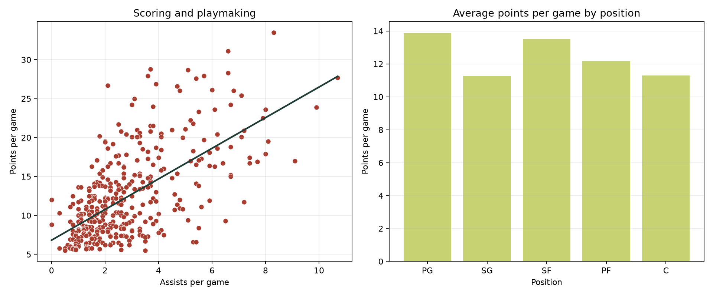

LEARN THROUGH THE DATA
Learn the metrics
Basketball glossary
- PTS · Points
- Average points scored during each game.
- REB · Rebounds
- Possessions recovered after a missed shot.
- AST · Assists
- Passes that directly lead to made baskets.
- Composite impact
- A teaching score that combines several player statistics.
Average stats by position
| Position | Players | Avg. points | Avg. impact |
|---|
Player stats by position
Average by position
